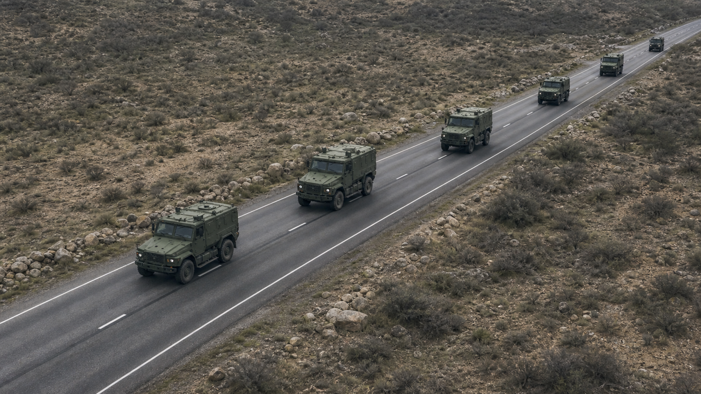

Target Configuration
Input and detection setup
MILITARY TARGET DETECTION SYSTEM
ระบบตรวจจับเป้าหมายทางทหาร
{{ clockDate }}
{{ clockTime }}
A
ผู้ดูแลระบบ
Administrator
Input Source
CAM {{ index + 1 }}
CAM {{ index + 1 }}
{{ sourceStatus }}
Target Selection
- AMV
- Armored Military Vehicle
- LMV
- Light Military Vehicle
- AFV
- Armored Fighting Vehicle
- CV
- Combat Vehicle
- MCV
- Military Cargo Vehicle
Detection Model
AI
{{ selectedModelName }}
{{ detectionModels.find((model) => model.id === selectedModel)?.detail }}
สรุปผลการตรวจจับ
AMV{{ metrics.AMV }}
LMV{{ metrics.LMV }}
AFV{{ metrics.AFV }}
CV{{ metrics.CV }}
MCV{{ metrics.MCV }}
รวมทั้งหมด{{ totalCount }}เป้าหมาย
ภาพแสดงผลขนาดใหญ่ (Live)

กำลังตรวจจับ... AMV AMV LMV AFV AMVไทม์ไลน์การตรวจจับตลอดวิดีโอ
{{ source.cameraLabel }}
{{ source.label }}
00:0002:0004:0006:0008:0010:00
Log การทำงาน
เวลา (Time)
ข้อความ (Message)
{{ group.source.cameraLabel }}
{{ group.source.label }}
{{ row.time }}
ตัวอย่างภาพในช่วงเวลาที่ตรวจจับ (Snapshot Every 10s)
{{ group.source.cameraLabel }}
{{ group.source.label }}